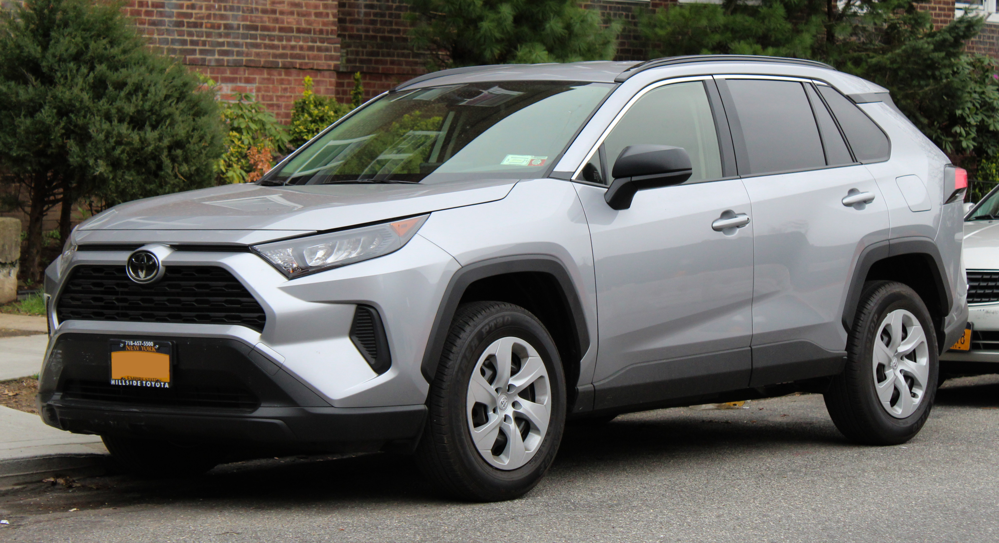
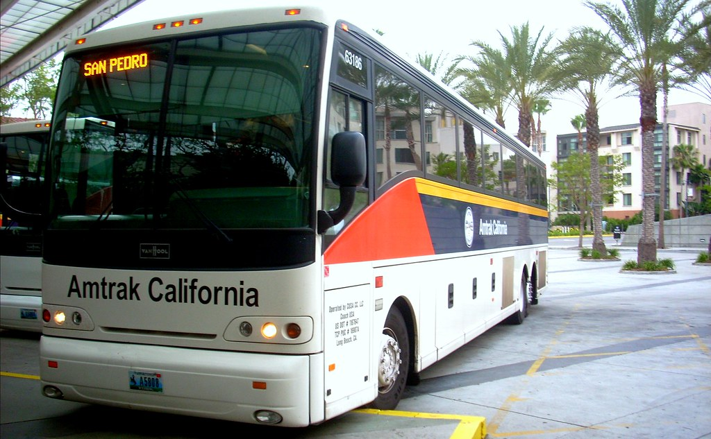
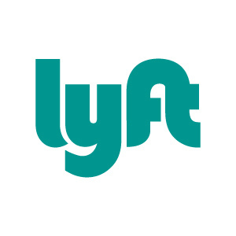
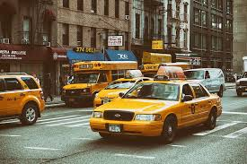

Here are types of transportation that you can take in many famous places. You may not believe it, but in the US, lot's of states use different types of transportation
including buses, taxis, cars and more!
Cars
As of 2018 California has the most cars used, while Texas is second, Florida is third and New York is fourth.
The best-selling car in 2019 was the Toyota RAV4, next was the Honda CR-V and third was the Nissan Rouge.
In America the drivers seat is on the left side, this is an important fact because in many countries the passenger seat is on the left!

Buses
Buses are a convinient way of going places if you don't have a car. But of course you have to pay a fee to go on the bus, as it's not free.
This type of transportation is usually found locally in any city, again as of 2018, California has the most bus registrations used, New York is second, and Texas is third.

Uber and Lyft
Ubers and Lyfts are more user-friendly than taxis or cabs.
They are easier because it's all on your phone, all you have to do is download the app and follow the directions that they give you.
Ubers or Lyfts will pick you up from your address in a car whether it's a basic or luxury car.


Taxis
As of 2018, 61% of people use taxis a few times a year.
To hail a Taxi, it's different from just calling some number. Instead you have to go on the street and yell "TAXI".
A fun fact is that taxis are a yellow color!!
